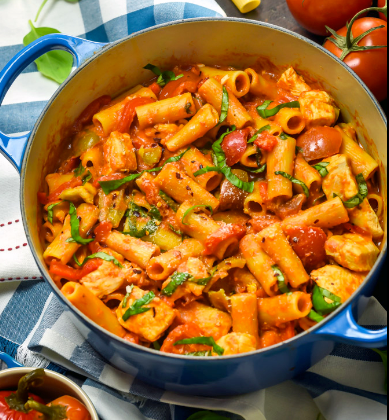

A delicacy from Utica, New York.
This is Utica, New York's, specialty dish.
Rigatoni (riggies) pasta is paired with chicken and spicy
peppers in a creamy red/white sauce.
Some other popular additions are mushrooms and black olives.
Ingredients
- 16 oz package rigatoni pasta
- 3 tablespoons extra-virgin olive oil
- 1.5 pounds skinless, boneless chicken breast, cut in bite sized pieces
- salt and black pepper to taste
- 1 oniond, diced
- 2 Cubanelle peppers, seeded and thinly sliced
- 3 cloves garlic, minced
- 28 oz can crushed tomatoes
- 3 roasted red peppers, drained and chopped
- 2 hot cherry peppers, seeded and minced
- 1.5 cup heavy cream
- .5 cup grated Parmesan cheese
Steps
- Bring a large pot of lightly salted water
to a boil over high heat. Add rigatoni
pasta and cook until tender yet firm to the bite, 8 to 10 minutes.
Drain and keep warm.
- Heat olive oil in a large skillet over medium-high heat.
Season chicken with salt and pepper, and cook in the hot
oil until lightly browned on all sides,
and no longer pink in the center, about 7 minutes.
Remove the chicken from the skillet and keep warm.
- Stir onion, Cubanelle peppers, and garlic into the skillet.
Cook and stir until onion softens, about 4 minutes.
Add crushed tomatoes, roasted red peppers, and hot cherry peppers.
Bring to a simmer. Stir in cooked chicken and heavy cream;
simmer for 2 to 3 minutes. Stir in cooked pasta.
- Serve garnished with Parmesan cheese.